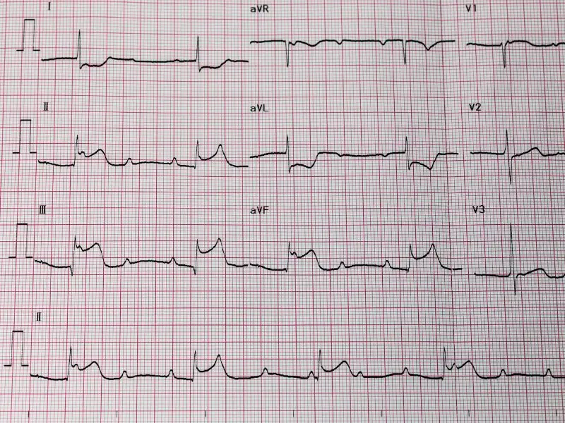
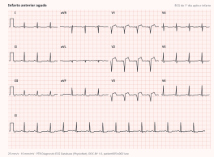
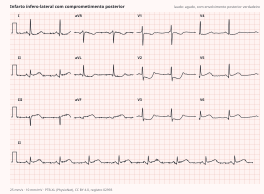
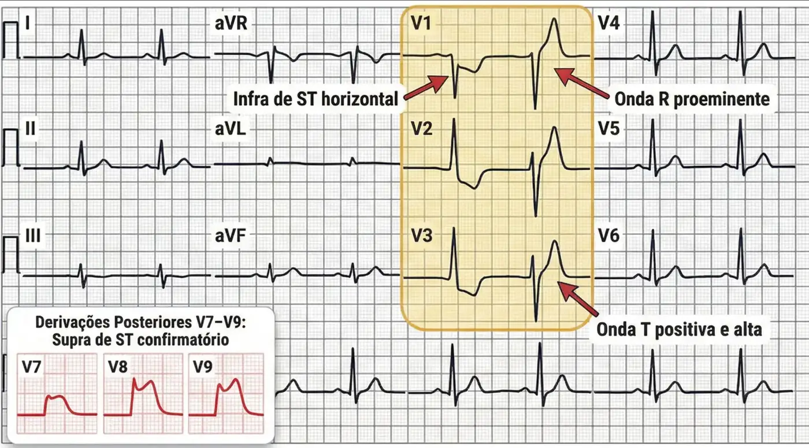
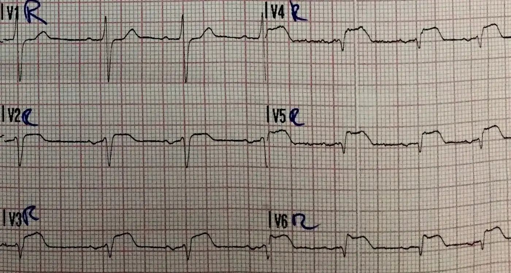
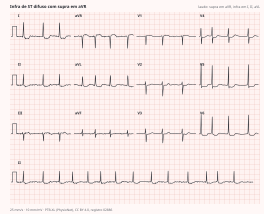
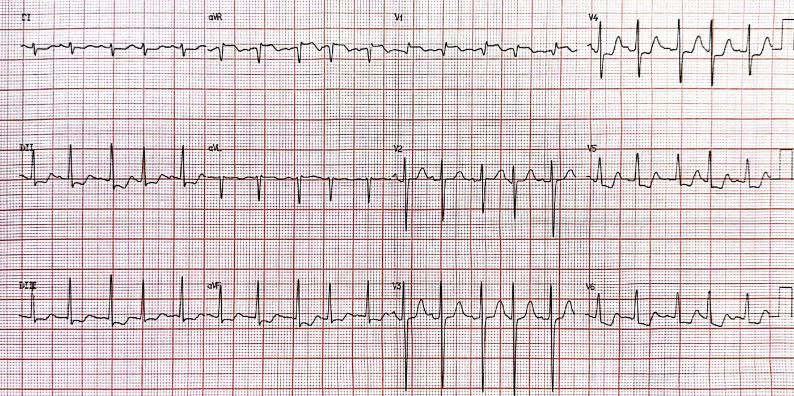
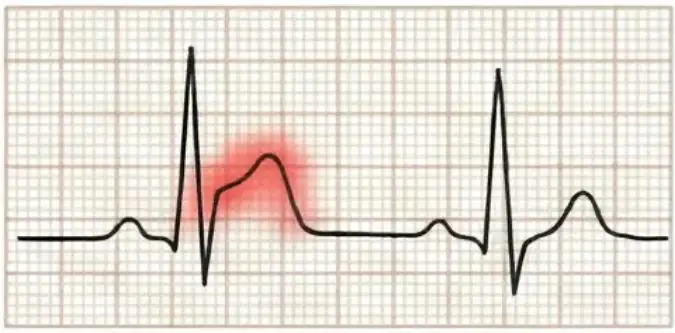
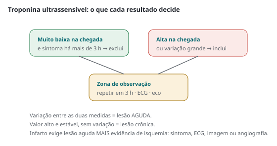

Cardiologia · 96 min · ACC/AHA 2025 · monografia
Síndromes coronarianas agudas
Em abril de 2025 a ACC/AHA reuniu num só documento o infarto com e sem supradesnivelamento: a fisiopatologia é uma só — ruptura ou erosão de placa com trombose — e quase toda a farmacologia é compartilhada. O que separa as duas rotas é o relógio. Este texto percorre o documento na ordem em que o paciente atravessa o serviço, com a classe e o nível de evidência transcritos da fonte.
1. Definição, escopo e as duas rotas
Síndrome coronariana aguda reúne três condições num contínuo: angina instável, infarto sem supra e infarto com supra. O mecanismo é o mesmo — ruptura ou erosão de placa, ativação da coagulação e trombose. Muda quanto fluxo sobrou: angina instável é isquemia transitória sem mionecrose detectável; o sem supra tem artéria parcialmente ocluída e isquemia subendocárdica; o com supra, oclusão total e isquemia transmural.
A diretriz trata do infarto tipo 1 da Definição Universal. O tipo 2 (desequilíbrio entre oferta e demanda em taquiarritmia, sepse, anemia grave, crise hipertensiva, hipoxemia), a dissecção espontânea de coronária e o MINOCA têm documentos próprios.
MINOCA é diagnóstico de trabalho: infarto com estenose < 50% em todas as epicárdicas. Obriga a procurar a causa — placa rompida sem obstrução, espasmo, embolia, dissecção, disfunção microvascular — e a excluir miocardite e takotsubo, com ressonância.
2. O eletrocardiograma: os critérios e as derivações que faltam
São dois números: aquisição e interpretação em até 10 minutos do primeiro contato médico e traçados seriados quando o primeiro não é diagnóstico. Primeiro contato médico é quando um profissional capaz de obter, interpretar e desfibrilar avalia o paciente — não a chegada à porta.
| Recomendação | Classe | Nível |
|---|---|---|
| Na suspeita de síndrome coronariana aguda, obter e interpretar eletrocardiograma em até 10 minutos para orientar o manejo | 1 | B-NR |
| Traçado inicial não diagnóstico: eletrocardiogramas seriados — sobretudo com suspeita alta, sintoma persistente ou piora clínica | 1 | C-LD |
| Suspeita de infarto com supra: transporte pré-hospitalar direto a hospital com hemodinâmica, meta de primeiro contato até o dispositivo ≤ 90 minutos | 1 | B-NR |
| Notificação antecipada do hospital e ativação da equipe de hemodinâmica ainda na ambulância | 1 | B-NR |
Os critérios de amplitude dependem de derivação, sexo e idade. Fora de V2–V3, supra novo ≥ 1 mm em duas derivações contíguas, medido no ponto J. Em V2–V3 os cortes são maiores porque a repolarização precoce é mais pronunciada ali: ≥ 2 mm em homens com 40 anos ou mais, ≥ 2,5 mm abaixo de 40 e ≥ 1,5 mm em mulheres de qualquer idade. Na rota sem supra: infra horizontal ou descendente ≥ 0,5 mm em duas contíguas e/ou inversão de T > 1 mm em duas contíguas com R proeminente ou R/S > 1.


Bloqueio de ramo esquerdo novo ou presumivelmente novo é infrequente e não é diagnóstico isoladamente; em assintomático não é equivalente de supra. E o supra pode ser mimetizado por pericardite, hipertrofia ventricular, Brugada, marcapasso, takotsubo e repolarização precoce.






Bloqueio de ramo esquerdo: os critérios de Sgarbossa
O bloqueio de ramo esquerdo altera a repolarização e produz, por si só, desnivelamentos de ST — normalmente discordantes, isto é, o ST aponta para o lado oposto ao do QRS. O problema diagnóstico é separar essa discordância fisiológica da que denuncia oclusão. É o que os critérios de Sgarbossa fazem, e eles valem tanto no bloqueio novo quanto no antigo.
| Critério | O que procurar |
|---|---|
| 1 — supra concordante | supra de ST ≥ 1 mm em derivação com QRS predominantemente positivo |
| 2 — infra concordante | infra de ST ≥ 1 mm em V1, V2 ou V3 |
| 3 — discordância excessiva (versão modificada) | supra de ST cuja razão em relação à profundidade da onda S ultrapassa 25% (ST/S ≤ −0,25) |

A modificação do terceiro critério mudou o desempenho da regra. No estudo que a propôs, substituir o supra absoluto de 5 mm pela razão ST/S de −0,25 elevou a sensibilidade de 52% (regra ponderada original) e 67% (não ponderada) para 91%, mantendo especificidade alta.
Leitura
Errado. Infra isolado em V1–V3 com R alta é o espelho do infarto posterior: o passo seguinte é V7–V9, agora. Se houver supra ali, é infarto com supra — reperfusão imediata, meta de 90 minutos, e a troponina normal não muda nada. É também o único cenário em que "apenas infra de ST" não contraindica fibrinolítico: a diretriz o coloca como 3: dano (B-R) em quem tem só infra, exceto na suspeita de verdadeiro infarto posterior.3. Os primeiros minutos: oxigênio, nitrato, morfina, aspirina
Três das quatro medidas que a memória coletiva reúne sob a sigla "MONA" foram redimensionadas por ensaios. A única que continua salvando vida com nível A é a aspirina.
| Recomendação | Classe | Nível |
|---|---|---|
| Hipoxemia confirmada (saturação < 90%): oxigênio suplementar para elevar a saturação a ≥ 90% | 1 | C-LD |
| Saturação ≥ 90%: oxigênio de rotina não é recomendado | 3: sem benefício | A |
| Dose de ataque de aspirina (162–325 mg) o mais cedo possível, seguida de manutenção diária em dose baixa | 1 | A |
Não é só ausência de benefício: o AVOID sugeriu maior lesão miocárdica com 8 L/min em quem tinha saturação ≥ 94%, por vasoconstrição coronariana e estresse oxidativo; o DETO2X-AMI, com 6.629 pacientes, não reduziu mortalidade em um ano, nem no subgrupo com saturação de 90% a 94%. A relação é em U, com menor mortalidade entre 94% e 96%.
- Nitroglicerina sublingual: 0,3 ou 0,4 mg a cada 5 min, até 3 doses; só com sistólica ≥ 90 mmHg e paciente estável.
- Nitroglicerina intravenosa: iniciar a 10 µg/min e titular pela dor e pela tolerância. Considerar na dor persistente após nitrato oral ou quando há hipertensão ou edema pulmonar. Evitar na suspeita de infarto de ventrículo direito, com sistólica < 90 mmHg ou queda > 30 mmHg do basal. Taquifilaxia em cerca de 24 h.
- Morfina IV: 2 a 4 mg, repetíveis a cada 5 a 15 min; até 10 mg podem ser considerados. Só para dor resistente à terapia anti-isquêmica máxima tolerada.
- Fentanil IV: 25 a 50 µg, repetíveis; até 100 µg. Mesma indicação de resgate.
- Nitrato após inibidor de fosfodiesterase-5: evitar dentro de 12 h do avanafil, 24 h do sildenafil ou vardenafil e 48 h do tadalafil.
Morfina e fentanil atrasam e atenuam o efeito dos inibidores orais de P2Y12, por retardo do esvaziamento gástrico. Analgésico alivia sintoma mas não melhora desfecho, e não pode servir para mascarar dor: dor que não cede a nitrato é indicação de revascularização rápida. Anti-inflamatórios não esteroidais aumentam eventos.
4. Troponina ultrassensível e o caminho de decisão
A troponina não decide reperfusão no supra — decide diagnóstico e destino no resto do espectro. Dosar o mais cedo possível, preferencialmente ultrassensível (1, B-NR), repetindo em 1 a 2 horas com ensaio ultrassensível e 3 a 6 horas com convencional quando a primeira não é diagnóstica (1, B-NR).

O ensaio ultrassensível detecta troponina na maioria dos indivíduos saudáveis e tem valor preditivo negativo altíssimo abaixo do limite de detecção. Dois cuidados: em apresentação muito precoce uma medida negativa não basta — daí a exigência de sintoma há mais de três horas; e a decisão integra clínica e eletrocardiograma.
Para estratificar risco, a diretriz cita GRACE 2.0 e TIMI. O corte operacional é GRACE > 140: no TIMACS e no VERDICT a coronariografia precoce não superou a tardia no geral, mas o sinal de benefício apareceu nesse subgrupo — assim como em diabéticos, acima de 75 anos e com troponina em ascensão íngreme.
5. Reperfusão no infarto com supra: os relógios
São dois relógios e um objetivo, reduzir o tempo isquêmico total. O do sistema: 90 minutos entre o primeiro contato médico e o primeiro dispositivo. O da decisão local: se o atraso previsto até o dispositivo passa de 120 minutos, a fibrinólise deixa de ser inferior e passa a ser a escolha.
| Recomendação | Classe | Nível |
|---|---|---|
| Manter sistemas regionais de atendimento ao infarto com supra | 1 | B-NR |
| Angioplastia primária para reduzir eventos cardiovasculares maiores no infarto com supra | 1 | A |
| Sintomas < 12 h e atraso previsto até a angioplastia primária > 120 minutos do primeiro contato: fibrinólise em quem não tem contraindicação | 1 | A |
| Apresentação entre 12 e 24 horas do início dos sintomas: angioplastia primária é razoável | 2a | B-NR |
| Apresentação > 24 horas com isquemia em curso ou arritmia ameaçadora: angioplastia primária é razoável | 2a | C-LD |
| Estável, artéria do infarto ocluída há mais de 24 h e sem isquemia: não reabrir | 3: sem benefício | — |
| Choque cardiogênico ou instabilidade hemodinâmica: revascularização de emergência do vaso culpado por angioplastia ou cirurgia, independentemente do tempo desde o início dos sintomas | 1 | B-R |
| Angioplastia inviável ou malsucedida com grande área de miocárdio em risco: cirurgia de revascularização de emergência ou urgência pode ser eficaz | 2a | B-NR |
A penúltima linha é a lição do ensaio OAT: depois de 24 horas, reabrir artéria ocluída em paciente estável e sem isquemia não traz benefício — classe 3 por ausência de benefício, não por dano. Isquemia, arritmia ameaçadora ou instabilidade invertem o veredito.
A parada ressuscitada tem recomendações próprias. Com supra: transporte a centro com angioplastia primária (1, C-LD); não comatoso, ou comatoso com prognóstico favorável, vai à angioplastia primária (1, B-NR); com prognóstico desfavorável, pode ser razoável após avaliação individualizada (2b, C-LD). No comatoso sem supra e estável, a angiografia de emergência é classe 3 por ausência de benefício.
flowchart TD
A["Dor toracica · ECG em ate 10 min"] --> B{"Supra pelos criterios
ou supra em V7-V9?"}
B -->|"nao"| Z["Rota sem supra · fluxograma 2"]
B -->|"sim"| C["Aspirina 162-325 mg mastigada
monitor · acesso · V3R-V4R se parede inferior"]
C --> D{"Choque ou instabilidade?"}
D -->|"sim"| E["Revascularizacao de emergencia do vaso culpado
qualquer tempo de sintoma · 1 B-R"]
D -->|"nao"| F{"Angioplastia primaria
em ate 120 min?"}
F -->|"sim"| G["Angioplastia primaria · meta 90 min
acesso radial"]
F -->|"nao"| H{"Sintomas ha menos de 12 h
sem contraindicacao?"}
H -->|"sim"| I["Fibrinolise · 1 A"]
H -->|"nao"| J{"12 a 24 h · ou isquemia
ou arritmia ameacadora?"}
J -->|"sim"| K["Transferir para angioplastia primaria · 2a"]
J -->|"nao"| M["Nao reabrir de rotina
3: sem beneficio"]
I --> N{"Criterios de reperfusao?"}
N -->|"nao"| O["Angioplastia de resgate imediata · 1 B-R"]
N -->|"sim"| P["Coronariografia de 2 a 24 h
farmaco-invasiva · 1 B-R"]
6. Fibrinólise e a estratégia fármaco-invasiva
A fibrinólise deixou de ser destino e virou ponte: depois do trombolítico o paciente segue para a hemodinâmica — imediatamente se a reperfusão falhou, entre 2 e 24 horas se funcionou.
| Recomendação | Classe | Nível |
|---|---|---|
| Suspeita de falha de reperfusão após o fibrinolítico: angiografia imediata com angioplastia de resgate, para reduzir morte ou reinfarto | 1 | B-R |
| Tratado com fibrinolítico e com reperfusão bem-sucedida: angiografia precoce entre 2 e 24 horas com intenção de angioplastia — a estratégia fármaco-invasiva | 1 | B-R |
| Tratado com fibrinolítico sem intenção de abordagem invasiva: fondaparinux é alternativa recomendada | 1 | B-R |
| Apenas infra de ST, exceto na suspeita de verdadeiro infarto posterior: fibrinolítico não deve ser administrado — AVC hemorrágico e sangramento maior | 3: dano | B-R |
Falha de reperfusão tem três sinais: sintomas que não melhoram; persistência do supra — resolução menor que 50% nas derivações anteriores ou menor que 70% nas inferiores; e instabilidade hemodinâmica ou elétrica.
- Tenecteplase: bólus único ajustado ao peso — 30 mg abaixo de 60 kg; 35 mg de 60 a 69 kg; 40 mg de 70 a 79 kg; 45 mg de 80 a 89 kg; 50 mg a partir de 90 kg. Equivalente à alteplase em mortalidade de 30 dias, com menos sangramento não cerebral.
- Reteplase: dois bólus de 10 unidades com 30 min de intervalo, cada um em 2 min.
- Alteplase: infusão de 90 min ajustada ao peso — a partir de 67 kg, 100 mg no total (15 mg em bólus, 50 mg em 30 min, 35 mg em 60 min); abaixo de 67 kg, 15 mg em bólus, 0,75 mg/kg em 30 min (máx. 50 mg) e 0,5 mg/kg em 60 min (máx. 35 mg).
As contraindicações absolutas (Tabela 14): hemorragia intracraniana prévia de qualquer época; lesão vascular cerebral estrutural; neoplasia intracraniana maligna; AVC isquêmico nos últimos 3 meses, exceto o AVC isquêmico agudo em curso; suspeita de dissecção de aorta; sangramento ativo ou diátese hemorrágica, excluída a menstruação; trauma craniano fechado ou facial nos últimos 3 meses; cirurgia intracraniana ou intrarraquidiana nos últimos 2 meses; e hipertensão grave não controlada, com sistólica > 180 ou diastólica > 110 mmHg. Relativas incluem hipertensão crônica mal controlada e AVC isquêmico prévio há mais de 3 meses.
7. A rota sem supra: risco e momento da coronariografia
Sem supra, a pergunta não é se vai haver coronariografia, mas quando — e para quem ela pode ser dispensada. Primeiro se decide entre estratégia invasiva de rotina e seletiva; depois, o momento.
| Recomendação | Classe | Nível |
|---|---|---|
| Risco isquêmico intermediário ou alto, candidato à revascularização: abordagem invasiva com intenção de revascularizar durante a internação | 1 | A |
| Risco isquêmico baixo: invasiva de rotina ou seletiva, ambas recomendadas | 1 | A |
| Angina refratária, instabilidade hemodinâmica ou elétrica: estratégia invasiva imediata — < 2 h da admissão | 1 | C-LD |
| Alto risco de eventos isquêmicos: estratégia invasiva precoce, em até 24 horas, é razoável | 2a | B-R |
| Sem alto risco, mas com decisão por estratégia invasiva: razoável fazer a angiografia antes da alta | 2a | B-R |
São instáveis, com indicação de menos de 2 horas: angina refratária ou recorrente apesar de terapia otimizada, instabilidade hemodinâmica ou elétrica, edema agudo de pulmão ou insuficiência cardíaca e insuficiência mitral em piora. Foram excluídos dos ensaios — daí classe 1 com nível C-LD. Sem hemodinâmica no serviço, transferir na hora.
No outro extremo, o de baixo risco com biomarcadores normais e diagnóstico duvidoso pode se sair melhor com estratégia seletiva: teste de isquemia ou angiotomografia antes da alta. Mas sintoma isquêmico em curso devolve o paciente à coronariografia, qualquer que seja o escore.
flowchart TD
A["Sem supra · ECG seriado + troponina 0 e 1-2 h"] --> B{"Instabilidade agora?
angina refrataria · choque · arritmia
edema agudo · mitral em piora"}
B -->|"sim"| C["Invasiva IMEDIATA em menos de 2 h · 1 C-LD"]
B -->|"nao"| D{"Troponina com variacao
ou ECG isquemico?"}
D -->|"nao"| E["Reavaliar diagnostico"]
D -->|"sim"| F{"Risco isquemico"}
F -->|"alto · GRACE acima de 140
diabetes · idade acima de 75"| G["Coronariografia em ate 24 h · 2a B-R"]
F -->|"intermediario"| H["Invasiva na internacao · 1 A"]
F -->|"baixo"| I["Invasiva de rotina OU seletiva · 1 A"]
I --> K{"Isquemia ou sintoma?"}
K -->|"sim"| H
K -->|"nao"| L["Alta com prevencao secundaria plena"]
Leitura
Não é invasiva imediata — não há angina refratária nem instabilidade. Mas é alto risco: GRACE acima de 140, idade acima de 75, diabetes e troponina com variação grande. Cabe coronariografia em até 24 horas (2a, B-R); 72 horas a tiram da janela em que o benefício apareceu no TIMACS e no VERDICT. Enquanto isso: aspirina, anticoagulação parenteral até a revascularização, estatina de alta intensidade e betabloqueador oral em menos de 24 horas.8. Antiplaquetários: o padrão, as doses e as exceções
A primeira mensagem-chave da diretriz é a antiagregação: dupla para todos, com ticagrelor ou prasugrel preferidos ao clopidogrel em quem vai à angioplastia. O clopidogrel virou a alternativa de quando os potentes não estão disponíveis, não são tolerados ou estão contraindicados.
| Recomendação | Classe | Nível |
|---|---|---|
| Inibidor oral de P2Y12 em adição à aspirina em toda síndrome coronariana aguda | 1 | A |
| História de AVC ou ataque isquêmico transitório: prasugrel não deve ser administrado | 3: dano | B-R |
| Sem supra, indo à angioplastia: prasugrel ou ticagrelor recomendados | 1 | B-R |
| Sem supra, manejado sem avaliação invasiva planejada: ticagrelor recomendado | 1 | B-R |
| Sem supra, com angiografia prevista para > 24 horas: pré-tratamento com clopidogrel ou ticagrelor pode ser considerado | 2b | B-NR |
| Com supra, em angioplastia primária: prasugrel ou ticagrelor devem ser administrados | 1 | B-R |
| Com supra, tratado com fibrinolítico: clopidogrel concomitante para reduzir morte e eventos | 1 | A |
| Em uso de ticagrelor, a dose de aspirina deve ser sempre ≤ 100 mg/dia | 1 | C-LD |
| Sem inibidor de P2Y12 prévio, indo à angioplastia: cangrelor intravenoso pode ser razoável | 2b | B-R |
| Inibidores de glicoproteína IIb/IIIa não devem ser usados de rotina | 3: dano | B-R |
| Alta carga trombótica, ausência de refluxo ou fluxo lento: inibidor de glicoproteína IIb/IIIa de resgate é razoável | 2a | C-LD |
- Aspirina: ataque de 162 a 325 mg, comprimido não revestido, mastigado; dar mesmo em quem já usava. Manutenção de 75 a 100 mg/dia.
- Clopidogrel sem fibrinolítico: ataque de 300 ou 600 mg, manutenção 75 mg/dia. Com fibrinolítico: ataque de 300 mg se ≤ 75 anos; sem ataque, 75 mg, se > 75 anos.
- Prasugrel (sem fibrinolítico, indo à angioplastia): ataque de 60 mg; manutenção 10 mg/dia, ou 5 mg/dia se peso < 60 kg ou idade ≥ 75 anos.
- Ticagrelor: ataque de 180 mg; manutenção 90 mg duas vezes ao dia.
- Após cangrelor: clopidogrel 600 mg ou prasugrel 60 mg imediatamente após a suspensão; ticagrelor 180 mg a qualquer momento.
Três finuras. A proibição do prasugrel em quem já teve AVC ou ataque isquêmico transitório vem do dano líquido nesse subgrupo. O ajuste do clopidogrel por idade no fibrinolisado — acima de 75 anos, sem ataque — protege do sangramento intracraniano. E o pré-tratamento caiu: com coronariografia rápida, carregar o P2Y12 antes da anatomia não mostrou benefício e compromete quem vai para cirurgia; sobrou como 2b, apenas se a angiografia for depois de 24 horas.
flowchart TD
A["Aspirina 162-325 mg mastigada em todos"] --> B{"Cenario"}
B -->|"Supra · angioplastia primaria"| C["Prasugrel 60 mg ou ticagrelor 180 mg · 1 B-R
+ HNF ou bivalirudina"]
B -->|"Supra · fibrinolise"| D["Clopidogrel · ataque 300 mg ate 75 anos
sem ataque acima de 75 · 1 A
+ enoxaparina ou HNF"]
B -->|"Sem supra · cateterismo"| E["Prasugrel ou ticagrelor · 1 B-R
+ HNF · 1 B-R"]
B -->|"Sem supra · conservador"| F["Ticagrelor · 1 B-R
+ enoxaparina ou fondaparinux · 1 B-R"]
C --> G["Dupla antiagregacao por 12 meses · 1 A"]
D --> G
E --> G
F --> G
G --> H{"Risco de sangramento
ou anticoagulacao oral?"}
H -->|"alto risco"| I["Monoterapia apos 1 mes · 2b
ou de-escalonar para clopidogrel · 2b"]
H -->|"anticoagulado"| J["Retirar a aspirina em 1 a 4 semanas
manter clopidogrel + anticoagulante · 1 B-R"]
H -->|"nao"| K["Se tolerou: monoterapia com ticagrelor
a partir de 1 mes · 1 A"]
9. Anticoagulação parenteral
A anticoagulação inicial trata o trombo da placa rompida — ou seja, o infarto tipo 1 presumido. Começa no diagnóstico, antes da angiografia, e deve ser mantida até a revascularização na mesma internação (1, C-LD).
| Recomendação | Classe | Nível |
|---|---|---|
| Sem supra: heparina não fracionada intravenosa é útil | 1 | B-R |
| Sem supra e sem previsão de abordagem invasiva precoce: enoxaparina ou fondaparinux são alternativas recomendadas | 1 | B-R |
| Em angioplastia: heparina não fracionada intravenosa é útil | 1 | C-EO |
| Com supra, em angioplastia: bivalirudina é útil como alternativa à heparina | 1 | B-R |
| Sem supra, em angioplastia: bivalirudina pode ser razoável como alternativa | 2b | B-R |
| Enoxaparina intravenosa pode ser considerada como alternativa à heparina no momento da angioplastia | 2b | B-R |
| Fondaparinux não deve ser usado para sustentar a angioplastia, pelo risco de trombose de cateter | 3: dano | B-R |
- Heparina não fracionada: ataque de 60 UI/kg (máx. 4.000 UI) e infusão de 12 UI/kg/h (máx. 1.000 UI/h) para TTPa de 60 a 80 s; com fibrinolítico, alvo de 50 a 70 s. Na angioplastia sem anticoagulante prévio, bólus de 70 a 100 U/kg para tempo de coagulação ativado de 250 a 300 s.
- Enoxaparina: 1 mg/kg subcutânea a cada 12 h; a cada 24 h se clearance < 30 mL/min. Com fibrinolítico e idade < 75 anos: bólus de 30 mg IV e, 15 min depois, 1 mg/kg a cada 12 h (máx. 100 mg nas duas primeiras). ≥ 75 anos: sem bólus, 0,75 mg/kg a cada 12 h (máx. 75 mg nas duas primeiras).
- Bivalirudina: bólus de 0,75 mg/kg e infusão de 1,75 mg/kg/h no procedimento; na angioplastia primária, manter por 2 a 4 h. Reduzir a 1 mg/kg/h se clearance < 30 mL/min.
- Fondaparinux: 2,5 mg subcutâneo/dia; com fibrinolítico, 2,5 mg IV e depois subcutâneo a partir do dia seguinte. Contraindicado se clearance < 30 mL/min.
10. Na sala: acesso radial, imagem intracoronária, tromboaspiração
Duas estratégias entraram nas mensagens-chave da diretriz, e uma terceira saiu.
| Recomendação | Classe | Nível |
|---|---|---|
| Em angioplastia: acesso radial preferido ao femoral — menos sangramento, complicações vasculares e morte | 1 | A |
| Stent em tronco de coronária esquerda ou lesão complexa: imagem intracoronária — ultrassom intravascular ou tomografia de coerência óptica | 1 | A |
| Angioplastia primária: tromboaspiração manual de rotina não deve ser realizada antes do procedimento | 3: sem benefício | A |
A metanálise de dados individuais de sete ensaios mostrou 24% menos mortalidade, 51% menos sangramento maior e 62% menos complicações vasculares com acesso radial. O femoral, guiado por ultrassom, fica para quando se planeja suporte mecânico ou a radial é inviável.
A tromboaspiração de rotina caiu por não reduzir tamanho de infarto nem eventos — em três ensaios agrupados, com 18.306 pacientes, não reduziu morte cardiovascular em 30 dias. Permanece como resgate, em 4% a 7% dos casos, quando o trombo persiste após balão ou stent.
11. Revascularização completa — e a exceção do choque
A revascularização completa é a sexta mensagem-chave e vale para as duas rotas: tratar apenas o vaso culpado deixou de ser o padrão.
| Recomendação | Classe | Nível |
|---|---|---|
| Com supra, estáveis, multiarterial, após sucesso no vaso culpado: angioplastia das lesões não culpadas significativas reduz morte ou infarto e melhora a qualidade de vida relacionada à angina | 1 | A |
| Com supra, doença multiarterial complexa envolvendo descendente anterior ou tronco: cirurgia eletiva das lesões não culpadas é razoável | 2a | C-EO |
| Com supra, estáveis, doença multiarterial de baixa complexidade: fazer a angioplastia multiarterial no mesmo procedimento pode ser preferível ao estagiamento | 2b | B-R |
| Sem supra, estáveis, multiarterial sem tronco e sem indicação cirúrgica: tratar as lesões não culpadas — no mesmo tempo ou estagiada | 1 | B-R |
| Sem supra, quando se cogita angioplastia multiarterial: avaliação fisiológica da estenose não culpada pode ser considerada para guiar a decisão | 2b | B-R |
| Infarto complicado por choque cardiogênico: a angioplastia de rotina de artéria não culpada no mesmo tempo da angioplastia primária não deve ser realizada | 3: dano | B-R |
A exceção do choque vem do CULPRIT-SHOCK: ali, abrir tudo aumenta mortalidade e insuficiência renal — o oposto do que vale no estável. A escolha entre cirurgia e angioplastia multiarterial sem supra passa pelo Heart Team (1, C-EO) e favorece a cirurgia em diabéticos com doença de descendente anterior, tronco complexo, doença difusa e disfunção ventricular grave.
12. Choque cardiogênico e suporte mecânico
O choque complica 5% a 10% dos infartos e é a principal causa de morte intra-hospitalar. A conduta que sustenta tudo permanece classe 1: revascularizar o vaso culpado de emergência, sem olhar o relógio. O que mudou em 2025 foi o lugar do suporte mecânico.
| Recomendação | Classe | Nível |
|---|---|---|
| Choque cardiogênico ou instabilidade hemodinâmica: revascularização de emergência do vaso culpado por angioplastia ou cirurgia, independentemente do tempo de sintoma | 1 | B-R |
| Selecionados, com supra e choque grave ou refratário: bomba de fluxo microaxial intravascular é razoável para reduzir mortalidade | 2a | B-R |
| Complicação mecânica: dispositivos de suporte circulatório de curta duração são razoáveis para estabilização como ponte para a cirurgia | 2a | B-NR |
| Infarto com choque cardiogênico: uso rotineiro de balão intra-aórtico não é recomendado | 3: sem benefício | — |
| Angina em curso, instabilidade hemodinâmica, arritmia não controlada, reperfusão subótima ou choque: internação em unidade coronariana | 1 | C-EO |
A bomba microaxial entrou pelo DanGer-SHOCK, e o candidato é delimitado: supra com choque SCAI C, D ou E, não comatoso, com vasculatura periférica adequada. Sangramento, isquemia de membro e insuficiência renal foram mais frequentes que no cuidado usual. ECMO-CS e ECLS-SHOCK não mostraram benefício da membrana venoarterial de rotina.
13. Complicações mecânicas, arrítmicas e o trombo de ventrículo esquerdo
As complicações mecânicas — ruptura do septo interventricular, insuficiência mitral aguda por infarto ou ruptura de músculo papilar e ruptura de parede livre, que a diretriz prefere chamar de ruptura contida, não pseudoaneurisma — ficaram raras com a reperfusão precoce e mantiveram letalidade alta. Aparecem na primeira semana, com dor recorrente, sopro novo e insuficiência cardíaca desproporcional, choque ou morte súbita. A cirurgia é a escolha, com mortalidade em torno de 40%, maior no choque.
| Recomendação | Classe | Nível |
|---|---|---|
| Complicação mecânica: manejo em serviço com expertise cirúrgica cardíaca | 1 | C-EO |
| Mobitz II sustentado, bloqueio avançado, bloqueio de ramo alternante ou bloqueio total persistente ou infranodal: marcapasso definitivo | 1 | B-NR |
| Arritmias ventriculares clinicamente relevantes após 48 horas e dentro de 40 dias do infarto: implante de cardiodesfibrilador é razoável | 2a | C-EO |
| Precocemente após o infarto, com fração de ejeção ≤ 35%: utilidade do colete desfibrilador temporário é incerta | 2b | B-R |
| Monitorização por telemetria em toda síndrome coronariana aguda | 1 | C-LD |
| Avaliação da fração de ejeção antes da alta | 1 | C-LD |
O trombo de ventrículo esquerdo aparece sobretudo no infarto anterior extenso; na era da angioplastia, incidência abaixo de 5% a 10%. A diretriz reconhece dados randomizados contemporâneos limitados e diz que o papel dos anticoagulantes orais diretos parece prudente mas não é sustentado por corpo robusto de dados.
14. Lípides: a intensidade, o alvo e a checagem
Colher o perfil lipídico assim que possível: o LDL começa a cair 24 horas depois do início dos sintomas, e colher tarde dá um número falsamente tranquilizador.
| Recomendação | Classe | Nível |
|---|---|---|
| Estatina de alta intensidade em toda síndrome coronariana aguda | 1 | A |
| Já em estatina maximamente tolerada com LDL ≥ 70 mg/dL: adicionar agente não estatínico | 1 | A |
| Intolerância a estatina: terapia não estatínica recomendada | 1 | B-R |
| Já em estatina maximamente tolerada com LDL entre 55 e 69 mg/dL: adicionar agente não estatínico é razoável | 2a | B-R |
| Início concomitante de ezetimiba com a estatina maximamente tolerada pode ser considerado | 2b | B-R |
| Perfil lipídico em jejum 4 a 8 semanas após iniciar ou ajustar a dose | 1 | C-LD |
Os não estatínicos aceitos: ezetimiba; inibidores de PCSK9 — alirocumabe e evolocumabe, cerca de 60% de redução do LDL; inclisirana, que inibe a síntese de PCSK9, reduz cerca de 50%, é aplicada a cada seis meses e ainda não tem ensaio de desfecho concluído; e o ácido bempedoico, a montante da HMG-CoA redutase, com cerca de 20% de redução e queda de eventos. Alta intensidade baixa o LDL em pelo menos 50%; na prática a diretriz persegue LDL abaixo de 55 mg/dL sem chamar isso de meta.
15. Betabloqueador, bloqueio do sistema renina-angiotensina e colchicina
| Recomendação | Classe | Nível |
|---|---|---|
| Sem contraindicação: betabloqueador oral em menos de 24 horas | 1 | A |
| Alto risco — fração ≤ 40%, hipertensão, diabetes ou supra de parede anterior: IECA ou BRA oral | 1 | A |
| Fração ≤ 40% com sintomas de insuficiência cardíaca e/ou diabetes: antagonista mineralocorticoide | 1 | B-R |
| Não considerados de alto risco: IECA ou BRA é razoável | 2a | A |
| Após síndrome coronariana aguda: colchicina em dose baixa pode ser razoável para reduzir eventos | 2b | B-R |
| Vacinação anual contra influenza recomendada | 1 | A |
As contraindicações ao betabloqueador precoce estão nomeadas: insuficiência cardíaca aguda (Killip II a IV), baixo débito ou risco de choque, PR > 0,24 s, bloqueio atrioventricular de segundo ou terceiro grau sem marcapasso, bradicardia grave e broncoespasmo ativo — com reavaliação em 24 horas. O intravenoso de rotina antes da angioplastia primária não é sustentado, e a duração ideal com fração preservada permanece indefinida.
16. Anemia e transfusão: o alvo que subiu
Depois de duas décadas de estratégia restritiva, o infarto ganhou exceção parcial: com anemia aguda ou crônica e sem sangramento ativo, transfundir para hemoglobina ≥ 10 g/dL pode ser razoável (2b, B-R). A classe fraca reflete o MINT, que não atingiu significância no desfecho primário. A anemia reduz a oferta de oxigênio ao miocárdio, aumenta o consumo e leva a suspender antitrombóticos.
17. Alta, antiagregação prolongada, reabilitação e prevenção secundária
Depois da alta, a prevenção secundária é o tratamento — um em cada cinco pacientes é readmitido em 30 dias.
| Recomendação | Classe | Nível |
|---|---|---|
| Sem alto risco de sangramento: dupla antiagregação por pelo menos 1 ano | 1 | A |
| Tolerou a dupla antiagregação com ticagrelor: transição para monoterapia com ticagrelor a partir de 1 mês após a angioplastia | 1 | A |
| Alto risco de sangramento digestivo: inibidor de bomba de prótons associado à dupla antiagregação, ao anticoagulante oral ou a ambos | 1 | A |
| De-escalonamento — trocar ticagrelor ou prasugrel por clopidogrel — após 1 mês pode ser razoável | 2b | B-R |
| Alto risco de sangramento: transição para antiagregação simples — aspirina ou inibidor de P2Y12 — após 1 mês pode ser razoável | 2b | B-R |
| Em anticoagulação oral: retirar a aspirina após 1 a 4 semanas de tripla, mantendo P2Y12 — preferencialmente clopidogrel — e o anticoagulante | 1 | B-R |
| Encaminhamento a reabilitação cardíaca ambulatorial antes da alta, | 1 | A |
| Programa de reabilitação domiciliar é alternativa razoável ao programa presencial | 2a | B-R |
A duração da dupla antiagregação virou decisão de risco de sangramento, não número fixo. O padrão é um ano; a partir de um mês há três saídas para quem sangra fácil — monoterapia com ticagrelor, a única classe 1 nível A, de-escalonamento para clopidogrel e antiagregação simples. Em quem já anticoagula, a aspirina é o componente que sai.
A educação na alta (Tabela 20) é cobrável: motivo da internação e resultados; estilo de vida; medicações com propósito, dose, frequência, efeitos adversos e adesão; o que monitorar e a quem ligar; quando retomar atividade física, atividade sexual, trabalho e viagem; depressão e ansiedade; consultas de seguimento. A reconciliação inclui nitroglicerina sublingual, salvo contraindicação. Nutrição, exercício, tabagismo e álcool seguem a diretriz de doença coronariana crônica de 2023.
Leitura
Tripla por 12 meses é exatamente o que a diretriz evita: suspender a aspirina após 1 a 4 semanas, mantendo o P2Y12 — preferencialmente clopidogrel, não ticagrelor nem prasugrel — com o anticoagulante (1, B-R). Acrescente inibidor de bomba de prótons (1, A) enquanto durar a combinação.Leitura
Falta o antagonista mineralocorticoide — fração ≤ 40% com diabetes e/ou sintomas é classe 1 (B-R). Falta o encaminhamento à reabilitação cardíaca antes da alta (1, A) e o lipidograma em 4 a 8 semanas (1, C-LD), com associação de não estatínico se o LDL ficar ≥ 70 mg/dL. Confira ainda a dose de aspirina: com ticagrelor, sempre ≤ 100 mg/dia.18. Armadilhas consolidadas
- Esperar troponina para indicar reperfusão em paciente com supra.
- Ler infra isolado de V1–V3 como isquemia subendocárdica e não pedir V7–V9.
- Dar nitrato no infarto inferior sem olhar V3R–V4R, ou sem perguntar por inibidor de fosfodiesterase-5 nas últimas 12, 24 ou 48 horas conforme o fármaco.
- Manter oxigênio de rotina com saturação ≥ 90%: classe 3 por ausência de benefício, nível A.
- Usar opioide para "estabilizar" dor isquêmica persistente em vez de acelerar a revascularização — e atrasar o efeito do P2Y12.
- Prescrever prasugrel em quem já teve AVC ou ataque isquêmico transitório: classe 3 de dano.
- Dar ataque de clopidogrel a paciente acima de 75 anos fibrinolisado: inicia-se com 75 mg.
- Manter aspirina acima de 100 mg/dia junto ao ticagrelor.
- Pré-tratar com P2Y12 quando a coronariografia é rápida: só é 2b, e apenas se ela for depois de 24 horas.
- Usar fondaparinux para sustentar a angioplastia: trombose de cateter, classe 3 de dano.
- Suspender a anticoagulação parenteral antes da revascularização na mesma internação.
- Abrir todas as artérias no paciente em choque — classe 3 de dano ali, classe 1 no estável.
- Reabrir de rotina artéria ocluída há mais de 24 horas em paciente estável e sem isquemia.
- Dar fibrinolítico a paciente só com infra de ST, exceto na suspeita de verdadeiro infarto posterior.
- Tratar a fibrinólise como ponto final: falta o resgate se falhou e a coronariografia de 2 a 24 horas se funcionou.
- Alta sem antagonista mineralocorticoide na fração ≤ 40% com diabetes ou insuficiência cardíaca, sem reabilitação, sem lipidograma de 4 a 8 semanas — e com tripla terapia mantida além de 1 a 4 semanas em quem anticoagula.